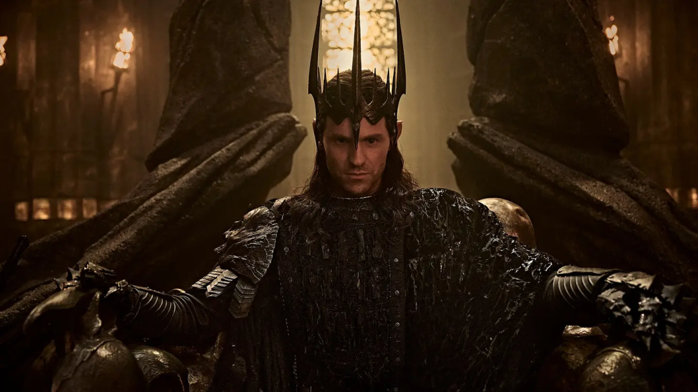
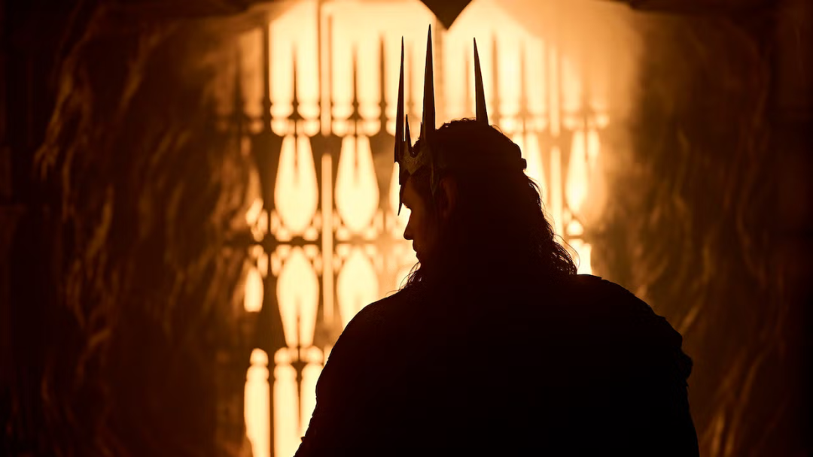
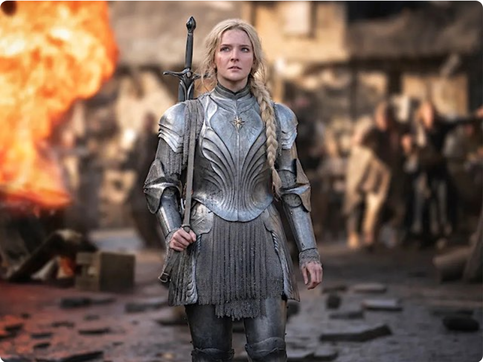
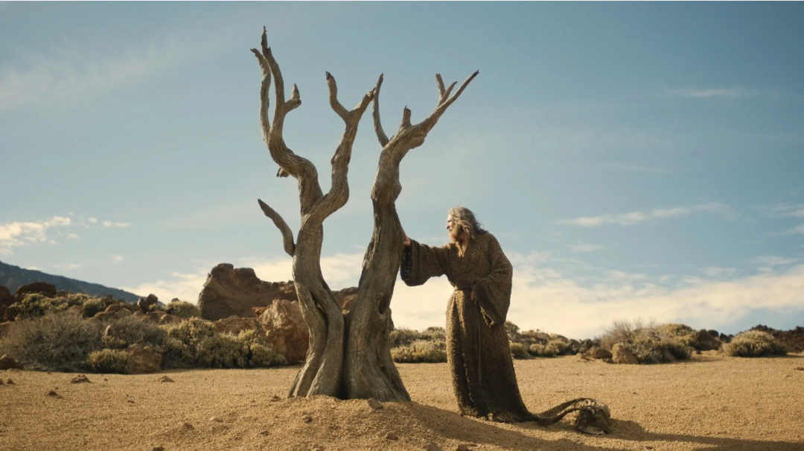

万众期待的《指环王：力量之戒》第三季预告片已经炸翻外网！熬过前两季大量铺垫叙事，第三季终于来到了中土最有看点的大战时刻。

第三季定档2026年11月11日，故事时间线直接跳过五年。这五年里发生了什么？
第二季结尾，索伦摧毁了埃瑞吉安，骗走了精灵三戒的锻造秘法，但至尊魔戒的诞生过程显然没那么顺利。索伦在末日火山里敲敲打打，试图锻造那枚注定要改变一切的戒指。
而预告片告诉我们：索伦端坐王座，至尊戒落地成形，戒身上的铭文在熔岩中逐一亮起，他成功了。
索伦不再躲在幕后玩阴谋，他戴上了那枚让整个中土闻风丧胆的至尊魔戒，与中土正面开战。

主创帕特里克·麦凯和佩恩说得很清楚，这一季的主题就是：锻造。而麦凯那句："这一季更黑暗、更危险，没人安全"，基本可以当成官方预警。
如果你看过《指环王：护戒使者》，你一定记得摩瑞亚矿坑里那个让甘道夫坠入深渊的噩梦：巴洛格，就是炎魔。
第三季里，矮人们因为过度挖掘秘银，再次惊醒了这个远古恶魔。
而索隆和巴洛格的正面对决，可能是本季最大的看点。

如果说前两季的主题是猜疑与分裂，那第三季的核心词只有一个：联手。
精灵、矮人、人类，这三个在中土历史上几乎从未真正合作过的种族，终于被同一个恐惧绑在了一起。
预告中，丹尼尔・韦曼饰演的角色，彻底觉醒全部身份，正式以甘道夫的角色站在中土各族面前，向所有自由子民发出残酷警告：拯救中土的代价，或许就是死亡。

他不再只是四处游荡的流浪者，而是成为精灵、人类、矮人联军的重要精神领袖。但甘道夫清楚，这场对抗索伦的战争不会轻松，无数人将会为此付出生命。
第三季不再是铺垫挖坑，而是实打实的中土史诗大战，半兽人军团、戒灵飞兽、炎魔、至尊魔戒全部就位。黑暗已经降临，属于魔戒的时代，正式开启。